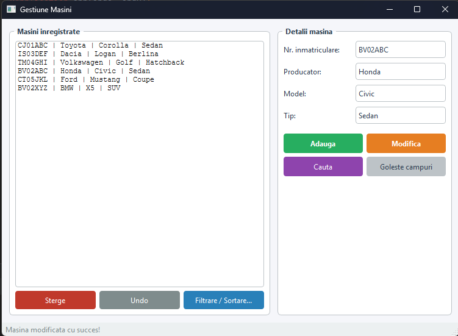
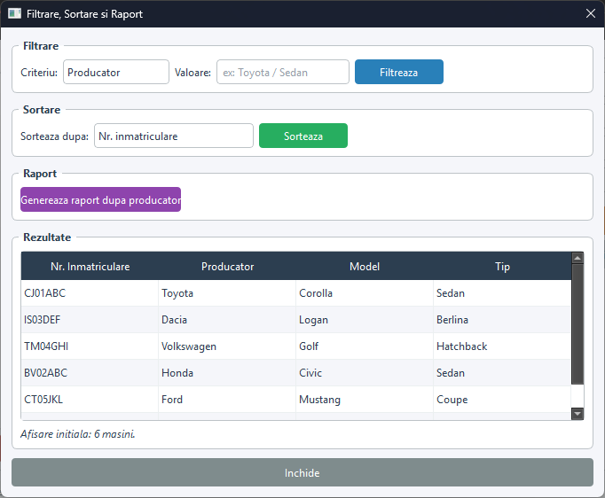

Project Case Study
A C++ desktop application for managing a car registry — featuring full CRUD operations, filter & sort, undo/redo with the Command pattern, CSV file persistence, automated tests, and a Qt GUI alongside a console interface.
Click any image to enlarge.

Main Window — CRUD + Undo

Filter, Sort & Report Window
Full-featured car registry management application.
Add, modify, delete, and search cars by registration number. Validation enforces the Romanian plate format (e.g. CJ01ABC).
Every add, delete, and modify is undoable via the Command pattern. An undo stack of unique_ptr<ActiuneUndo> ensures zero memory leaks.
Filter by producer or type. Sort by registration number, type, or producer+model. Results shown in a dedicated Qt table window.
Generate a report showing how many cars each producer has in the registry, using std::map.
FileRepository extends Repository and auto-saves to CSV on every operation. Data is loaded on startup.
Both a full Qt GUI (MainWindow + FiltrareSortareWindow) and a complete console interface are available.
Maintain a separate work list of cars to process. Add by registration number, view, or clear the list independently.
Full test suite using assert() covering domain, repository, service, filter, sort, work list, report, and undo — run on every startup.
Clean layered architecture with dependency injection — the UI never touches the repository directly.
MainWindow and FiltrareSortareWindow for the GUI. UI class for the console. Both depend only on Service.
Validation, undo stack management, filter, sort, work list, and report. Holds a reference to Repository injected via constructor.
Base Repository with in-memory storage. FileRepository extends it and auto-syncs to CSV on every write operation.
Masina class with registration number, producer, model, and type. Custom copy constructor with Rule of Three compliance.
Some interesting implementation details from the codebase.
Command pattern for undo — abstract base class with three concrete implementations:
Custom DynamicVector<T> template with Rule of Three:
Registration number validation with std::regex: